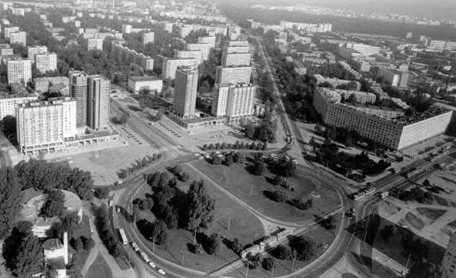
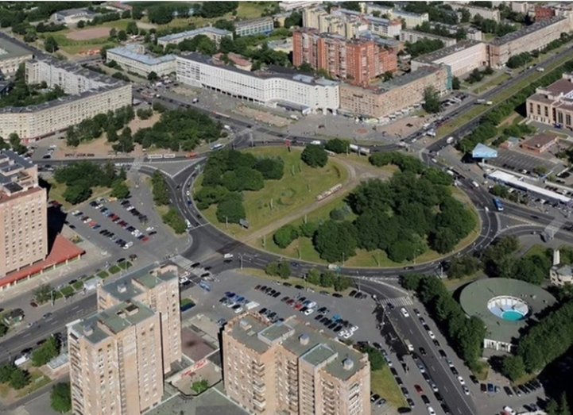

Историки утверждают, что там, где сейчас находится площадь Мужества, когда‑то проходила дорога от Выборгского шоссе (проспект Энгельса) к Муринской дороге.
В далеком XVIII веке тут была Спасская дача близкого к императорскому двору офицера Ивана Ивановича Кушелева. Эта дача, построенная в середине XVIII века и приобретенная затем Кушелевым, стала первым здешним поселением.
К концу XVIII века здесь сформировался перекресток нескольких улиц. В начале XIX века на углу Большой и Малой Спасских улиц была построена деревянная Преображенская часовня. Еще через столетие здесь уже кипела жизнь: тут находилась и аптека Шлезингера, и булочная купца Сотова, появился и кинотеатр, у которого в двадцатых годах любили собираться беспризорники.
Согласно документальным источникам, площадь на месте перекрестка была распланирована в 1950‑х годах. В проектной документации она упоминается как Спасская или Муринская. 16 января 1964 года Большую Спасскую улицу объединили с Пискаревской дорогой и назвали проспектом Непокоренных. 15 мая 1965 года новую площадь назвали площадью Мужества. Проект застройки площади разрабатывался в 1959–1960 годах архитектором Логином Людвиговичем Шретером. Она задумывалась как архитектурный центр всего района, въезд из центра города к Пискаревскому мемориалу. Из‑за сложного грунта не удалось выполнить замысел архитектора полностью.
Мне же площадь Мужества помнится особенно. Сколько раз я в школьные годы доходил, доезжал до нее с обычной своей заветной целью. Эта площадь навсегда запомнилась мне обилием кооперативных ларьков. Это было так удивительно для недавнего советского школьника. Мы ведь видели один мир, и вдруг он стал совершенно другим.
Сейчас, конечно, смешно вспоминать, что продавалось тогда в этих кооперативных ларьках: от аляповатых солдатиков до скандальных газет. Но в этом мире ты чувствовал себя взрослым. А это было совершенно удивительное ощущение. Тебе как будто втайне от родных, учителей позволили насладиться запретным плодом.
Проспект Тореза по‑прежнему оставался достаточно тихим, спокойным. Мало что в нем претерпевало изменения — как будто мы жили в прежней стране. А вот стоило дойти до площади Мужества, как всё менялось.